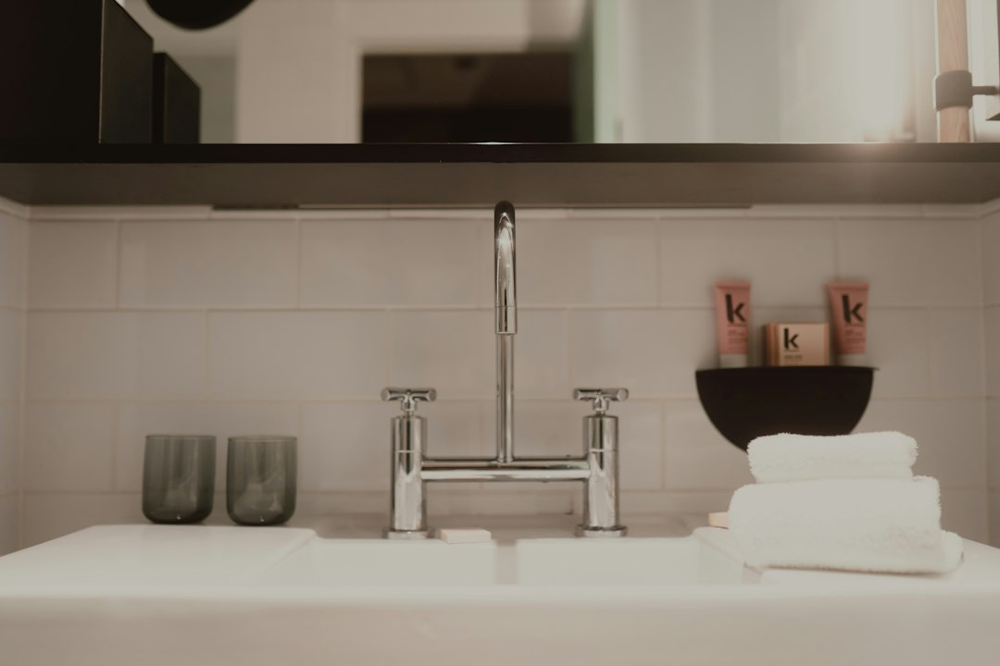

For homeowners comparing bathroom renovations gold coast options, the useful starting point is a clear brief that explains the room problem before anyone prices the work.
Bathroom Renovations Gold Coast Explained
Bath Renovation Gold Coast describes the early enquiry around the issues that shape a quote: leaks, dated tiles, cramped layouts, finish choices, access and must-have outcomes. That order is useful because the site visit can test a real brief instead of starting with guesswork.
Separate visible preferences from job conditions. Tile colour and tapware matter, but the quote is shaped by the existing shower, drainage, waterproofing, demolition, tiling area, room size, access and any plumbing or electrical change. The published page says early figures are planning ranges only, with the written quote following the site review.
- Describe the main fault first, such as a leaking shower, awkward layout or tired family bathroom.
- State whether the job is a full strip-out, compact refit, ensuite upgrade, shower replacement, waterproofing job or tiling scope.
- List access details, apartment rules or local constraints before the visit.
- Decide which outcomes are essential and which finishes can be adjusted.
Who This Applies To
This guide suits Gold Coast owners preparing an enquiry for a coordinated bathroom job, not only choosing surface finishes. The published services include full bathroom renovations, small bathroom renovations, ensuite upgrades, shower replacements, waterproofing and tiling.
Apartment owners should raise building access and rules early, because the page names local homes, access, humidity and apartment rules as first questions. Owners of older homes or rental style rooms should keep the brief factual: what leaks, what feels cramped, what needs replacement, and what must be ready for quote comparison.
The related single-room bathroom renovation guide is useful when the choice is between a focused upgrade and a broader rebuild.
Quote Inputs That Change Scope
The clearest quotes come from clear constraints. The published process is enquiry, job clarification, written quote and renovation. Before pricing, the renovator assesses the space, so owners can help by stating what is known and flagging what needs checking on site.
For a full renovation, say whether the room is being stripped out, whether layout changes are expected, and what level of fit-off is wanted. For a shower replacement, ask how the membrane, drainage and screen details will be handled before fresh tiles go in. For a compact bathroom, focus the discussion on storage, shower access and cleaner layout.
- Ask what is included in demolition, waterproofing, tiling and fit-off.
- Ask whether plumbing or electrical changes are assumed or excluded.
- Ask how provisional selections are treated before final products are chosen.
- Ask when the written itemised quote becomes the basis for scheduling.
Waterproofing And Contracts
Waterproofing is one of the few technical details named directly on the published page. It states that wet-area waterproofing is carried out to Australian Standard AS 3740 by licensed waterproofers, with aspect certification on completion. Owners should ask where that work appears in the quote and what document is supplied after completion.
The same page states that a written Domestic Building Contract is used for work over $3,300. That figure is a practical checkpoint for bathroom renovations gold coast enquiries because it tells the owner when the job terms should be formalised. The contract should reflect the same scope as the quote, including exclusions and any site review findings.
Useful questions are simple: who performs waterproofing, what certification is supplied, what is excluded, and what happens if site review finds more plumbing or electrical work than expected.
Local Job Conditions To Raise Early
The Gold Coast setting matters when it changes access, use or layout. The published page gives examples of a family bathroom in Nerang, a holiday-let ensuite in Surfers Paradise and a leaking shower in Labrador. Those examples point to different questions: household continuity, compact ensuite planning, access rules and the cause of a leak.
For apartment or holiday-let rooms, ask how building access, rules and scheduling will be handled. For established houses, ask whether the existing layout supports a narrower shower and tiling solution or needs a full rebuild. Each local detail should help clarify the job before pricing.
Reading The Written Quote
A written itemised quote is only helpful if it lets the owner compare the real job. Look for clear inclusion of design, demolition, waterproofing, tiling and final fit-off where those stages apply. If the quote is for a smaller room, check how storage and shower access have been handled. If it is for an ensuite, check whether the brief improves how the main bedroom functions.
The published page says costs and timelines vary widely with room size, fitting quality, and how much plumbing and electrical work is needed. Treat any early number as a planning guide until the room has been assessed. The better test is whether the quote answers the problems raised in the enquiry and site review.
- Send a detailed enquiry. Include your suburb, rough budget, room problem and what you want changed.
- Clarify the site conditions. Raise access, apartment rules, leaks, layout issues and must-have outcomes before the site visit.
- Review the written quote. Check that demolition, waterproofing, tiling, fit-off, exclusions and contract terms are clear.
- Approve before scheduling. Proceed after the quote, scope and written contract requirements are understood.
| Option | Best fit | Questions to ask |
|---|---|---|
| Full strip-out renovation | Tired, leaking or impractical rooms needing layout, waterproofing, tiling and fit-off | What is included from demolition through to handover? |
| Small bathroom refit | Compact rooms where storage, shower access and cleaner layout matter | How will the layout improve without adding floor area? |
| Shower replacement | Leaking or dated shower areas needing membrane, drainage and screen details | Who handles waterproofing and what certification is supplied? |
| Bathroom tiling | Floors, walls, niches or feature zones where tiling is the main visible work | How is the set-out planned for wet-area durability and finish? |
This guide covers planning, quote checks, waterproofing questions and contract signals for Gold Coast bathroom projects.